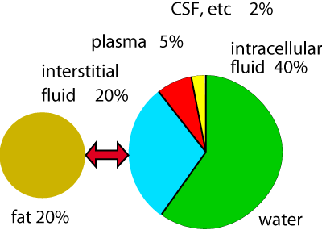
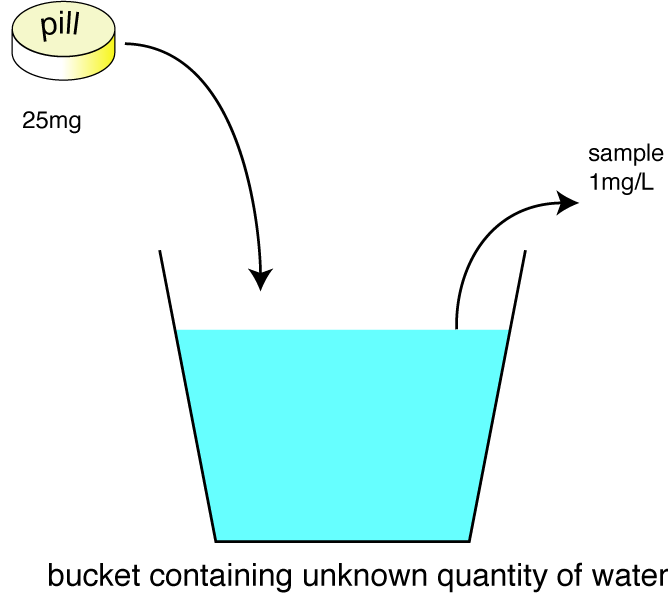

Once many drugs get into the plasma, they bind to plasma proteins, especially albumin. Plasma albumin is particularly important in binding acidic drugs; basic drugs may be bound by β globulin and acid glycoprotein. Binding depends on:
drug concentration
affinity for the binding sites
protein concentration
There is usually a much larger number of binding sites
than molecules of drug to bind to them, but this can change if there is
a low concentration of albumin
(liver disease) or if many of the binding sites are already occupied by another
highly protein bound drug. This is clinically important since it is the free
(unbound) proportion of the drug which can move into the target tissue and
is thus active. If you give a drug which is normally 98% protein bound leaving
2% to produce the expected effects, if the binding sites are not available
the amount of free drug may be dramatically different from expected and the
effects may be much greater. This can cause embarassment if the owner is
watching. However, most modern drugs are so potent (ie, work at very low
concentration)
that displacement is rare. Old drugs such as sulphonamides and phenylbutazone
can occupy clinically significant numbers of binding sites.
Protein bound drug is also unavailable for metabolism (but if the free drug
is metabolised, some bound drug will quickly take its place, so this is not
a limit on metabolism).
Highly lipid soluble drugs will be partitioned into fat. Thus nearly all the administered dose of thipentone (fat : water partion coefficient 10:1) would be dissolved in fat at equilibrium. Fortunately, fat has such a poor blood supply that equilibrium never occurs, but fat can still be a significant reservoir for thiopentone. This then slowly leaches out and has a prolonged effect in much the same way as a depot injection dissolved in oil.
Ion trapping can also
occur in tissues, eg, non-steroidal anti-inflammatory drugs tend to be trapped
in inflamed tissue.

Proportion of body weight taken up by various compartments.
The body can be regarded as a number of fluid compartments:
plasma 5% body weight
extracellular fluid 20%
intracellular fluid 40%
CSF etc 2%
fat 20% (variable!!!)
Some idea of where drugs go can be obtained from the apparent volume of distribution (Vd). This is defined as the volume of fluid required to contain the amount of drug in the body at the same concentration as that present in the plasma. Thus if the volume of distribution is the same as the plasma volume (c 0.05 L/kg), the drug is probably staying in the circulation, eg large protein bound molecules like heparin. If it is much greater than the volume of the total body water, or even of the body, the drug is being distributed to a reservoir somewhere, usually fat, eg morphine (c 5 L/kg).
Drugs with a large volume of distribution usually cross the blood brain barrier, which may be desirable, and also the placenta, which is usually not.
The volume of distribution is sometimes used to calculate the dose required to reach a target plasma concentration.
Volume of distribution: the Vd can be calculated if the amount put in (the dose) and the concentration are known. nb - animals are more complicated than a bucket of water!